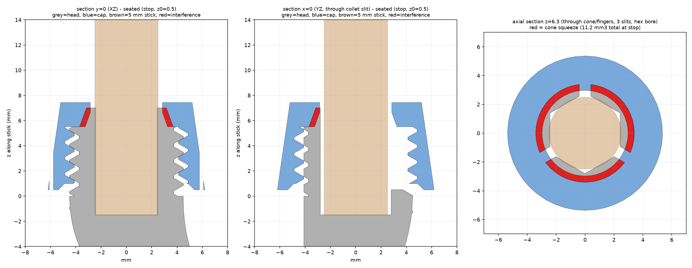
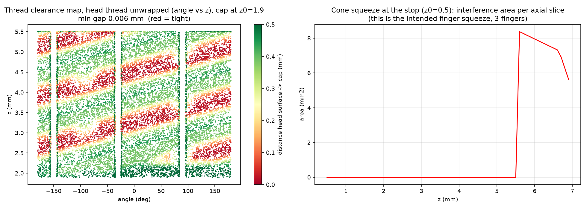

PASS: the cap screws on and matches the committed results
fit-test/final_sweep.py + fitlib.py, then render_fit.pysweep_final.csv: byte-identicalHow it works: the virtual cap is moved down the M9×1.25 helix (one full turn per 1.25 mm). At each step the overlap volume between the cap and head meshes is measured with manifold3d booleans. “Best ±4°” retries small rotation offsets to rule out lucky alignment.
| height above seated (mm) | cap rotation (°) | overlap on helix (mm³) | best ±4° (mm³) | meaning |
|---|---|---|---|---|
| 7.30 | 307.9 | 0.0000 | 0.0000 | clear |
| 7.00 | 221.5 | 0.0000 | 0.0000 | clear |
| 6.70 | 135.1 | 0.0000 | 0.0000 | clear |
| 6.40 | 48.7 | 0.0000 | 0.0000 | clear |
| 6.10 | 322.3 | 0.0000 | 0.0000 | clear |
| 5.80 | 235.9 | 0.0000 | 0.0000 | clear |
| 5.50 | 149.5 | 0.0000 | 0.0000 | clear |
| 5.20 | 63.1 | 0.0000 | 0.0000 | clear |
| 4.90 | 336.7 | 0.0000 | 0.0000 | clear |
| 4.60 | 250.3 | 0.0000 | 0.0000 | clear |
| 4.30 | 163.9 | 0.0000 | 0.0000 | clear |
| 4.00 | 77.5 | 0.0000 | 0.0000 | clear |
| 3.70 | 351.1 | 0.0000 | 0.0000 | clear |
| 3.40 | 264.7 | 0.0000 | 0.0000 | clear |
| 3.10 | 178.3 | 0.0000 | 0.0000 | clear |
| 2.80 | 91.9 | 0.0000 | 0.0000 | clear |
| 2.50 | 5.5 | 0.0000 | 0.0000 | clear |
| 2.20 | 279.1 | 0.0000 | 0.0000 | clear |
| 1.90 | 192.7 | 0.0000 | 0.0000 | clear |
| 1.60 | 106.3 | 0.2529 | 0.2528 | first cone contact |
| 1.50 | 77.5 | 0.6372 | 0.6371 | cone squeezing the fingers |
| 1.40 | 48.7 | 1.1496 | 1.1494 | cone squeezing the fingers |
| 1.30 | 19.9 | 1.7902 | 1.7900 | cone squeezing the fingers |
| 1.20 | 351.1 | 2.5589 | 2.5588 | cone squeezing the fingers |
| 1.10 | 322.3 | 3.4559 | 3.4559 | cone squeezing the fingers |
| 1.00 | 293.5 | 4.4813 | 4.4812 | cone squeezing the fingers |
| 0.90 | 264.7 | 5.6348 | 5.6348 | cone squeezing the fingers |
| 0.80 | 235.9 | 6.9046 | 6.9046 | cone squeezing the fingers |
| 0.70 | 207.1 | 8.2507 | 8.2507 | cone squeezing the fingers |
| 0.60 | 178.3 | 9.6708 | 9.6708 | cone squeezing the fingers |
| 0.50 | 149.5 | 11.1658 | 11.1655 | fully seated (finger squeeze) |


Not built yet. Ideas for what to add next, most useful first.